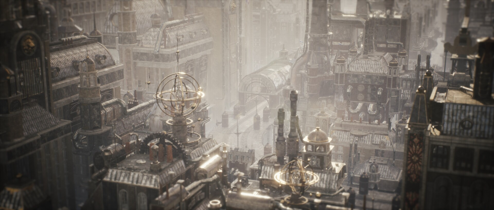

도시 자체가 서사
계층과 기능이 수직으로 분리된 중앙도시를 통해 권력 구조를 공간적으로 보여줍니다.

06 / Dieselpunk Narrative
PROJECT OVERVIEW
AI가 건설한 낙원이 붕괴한 뒤 세워진 디젤펑크 중앙도시를 배경으로 한 내러티브 디자인 프로젝트입니다. 금지된 AI 파편과 도시를 지배하는 세력, 여섯 개의 탑을 따라가며 판단을 기계에 맡길 것인지 스스로 책임질 것인지를 선택하게 합니다.
계층과 기능이 수직으로 분리된 중앙도시를 통해 권력 구조를 공간적으로 보여줍니다.
AI를 파괴할지, 통제할지, 다시 의존할지에 따라 관계가 달라집니다.
기계와 인간 어느 쪽도 정답으로 두지 않고 효율과 책임이 충돌하게 만듭니다.
DESIGN / SYSTEM
과거 AI가 유지하던 자동화 문명이 붕괴한 뒤 인간은 증기와 연료, 기계 장치로 도시를 재건했습니다. 낡은 기술과 금지된 AI 유산이 동시에 존재합니다.

도시의 핵심 기능과 권력을 담당하는 여섯 개의 탑을 주요 서사 거점으로 설정했습니다. 각 탑은 서로 다른 생존 논리와 정치적 이해관계를 가집니다.

AI 파편은 위험한 유물이면서 도시 문제를 가장 빠르게 해결할 수 있는 수단입니다. 사용이 늘수록 판단권이 다시 기계에 종속될 가능성도 커집니다.

MEDIA GALLERY





VIDEO
ROLE / RESPONSIBILITY
설정을 장식으로 소비하지 않고 공간·세력·선택 규칙이 같은 질문을 반복하도록 구성했습니다.
AI 낙원의 붕괴와 디젤펑크 중앙도시의 역사적 배경을 구성했습니다.
공간 구조가 권력과 계층을 드러내도록 주요 지역을 배치했습니다.
AI 활용에 대한 입장 차이를 중심으로 협력과 갈등의 기준을 만들었습니다.
효율, 자율성, 책임이 충돌하는 선택지를 설계했습니다.